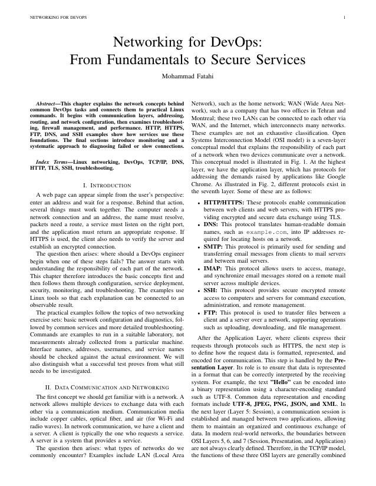

LAB 01FOUNDATIONS
Preparing a Web Server
Inspect interfaces, configure Netplan, test connectivity, and identify listening services.
From your first interface check to a secure service. Learn the concepts, run the commands, and understand the evidence.
$ ip -br addr $ ip route $ dig example.com $ curl -I https://example.com $ ss -ltn
Two exercise sets, one sequence. Start with the foundations, then move into services and diagnosis.
Inspect interfaces, configure Netplan, test connectivity, and identify listening services.
Capture traffic, inspect TCP and DNS, test ports, and troubleshoot through the OSI layers.
Build a firewall policy and investigate connection counts, login failures, and unusual ports.
Configure local names, follow routes, and explain a small star topology.
Compare TCP and UDP, then measure throughput, RTT, loss, and jitter.
Generate a certificate, inspect trust, and serve a small application over HTTPS.
Configure an isolated FTP service and compare FTP, SFTP, and SCP.
Serve a page, test API methods, and interpret status codes and response headers.
Explore DNS records, query timing, CDN caching, and an authoritative BIND zone.
Use key authentication, understand forwarding directions, and review SSH hardening.
Measure interval traffic, analyze logs, and create a refreshing terminal dashboard.
Diagnose unavailable websites, slow connections, and stalled SSH exchanges.
No labs match your search. Try another topic or select All labs.
A connected explanation of communication layers, Linux configuration, service security, monitoring, and systematic troubleshooting. Includes four illustrations and technical references.
17 pages · LaTeX source available in the repository

See how addressing, routing, transport, and application protocols work together.
Separate a listening socket from a healthy service, and a failed probe from a confirmed fault.
Compare your work with translated explanations and clearly labeled historical reports.